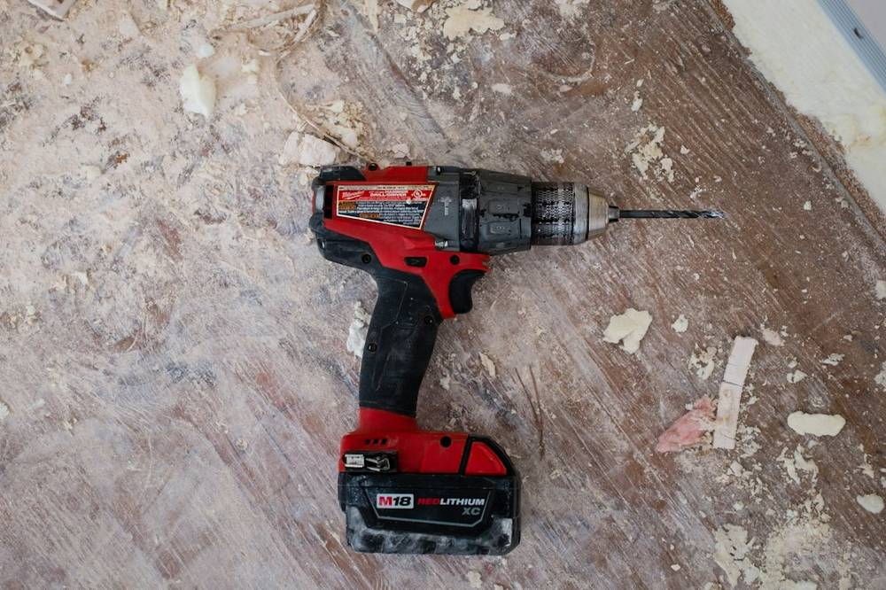
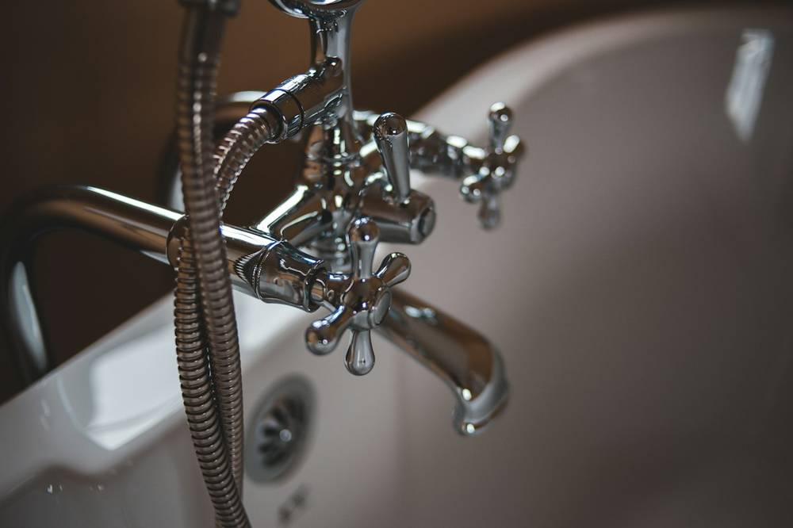
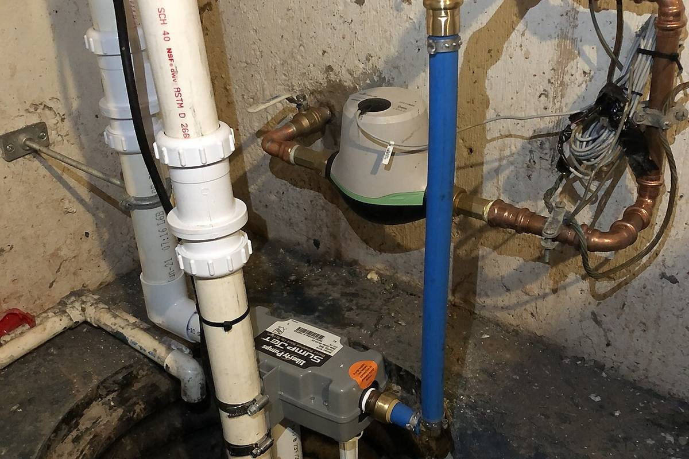
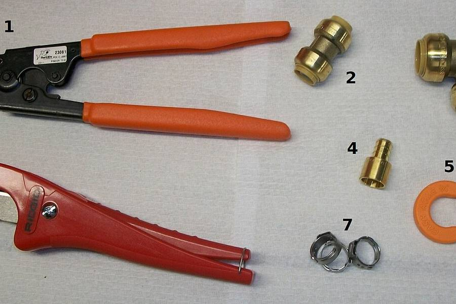

Kitchen, bathroom and basement remodeling in Limerick, PA
D N E Contracting is a women-owned remodeling contractor and licensed plumber serving Limerick and Montgomery County. We know the local housing stock: newer developments where a basement bathroom and laundry turn a storage floor into living space. The consultation is free, in your home, and you never have to decide on the spot.
Get your free quote Call or text (484) 939-8535
Licensed & insured · Owner on every job · Serving Limerick 19468 and all of Montgomery County

What we do in Limerick




Why Limerick homeowners call us
- Free, no-pressure in-home consultation with the owner
- Plumbers first, so the part of the remodel that leaks is done by the people who own it
- Written estimates and schedules, tracked on a private project page
- Permits and inspections with Limerick's township handled for you
- Clean job sites, shoes off at the door, one point of contact
Limerick remodeling questions
Do you serve all of Limerick?
Yes, Limerick and the surrounding parts of Montgomery County are inside our regular service area, so there is no travel surcharge and we can usually schedule a free consultation within the week.
What permits do remodels need in Limerick?
Kitchens, bathrooms and finished basements almost always need township permits once plumbing, electrical or structural work is involved. We pull them and schedule the inspections for you.
Can I get a ballpark before you visit my Limerick home?
Yes. Sketch the room in the online remodel planner, see it in 3D and get a realistic range. The exact number comes in writing after the free in-home visit.
Nearby areas we also serve
Thinking about a project in Limerick?
Sketch it in the planner or just call. Either way, the visit is free.